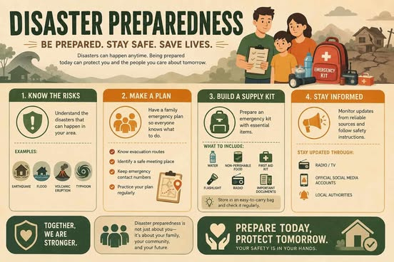
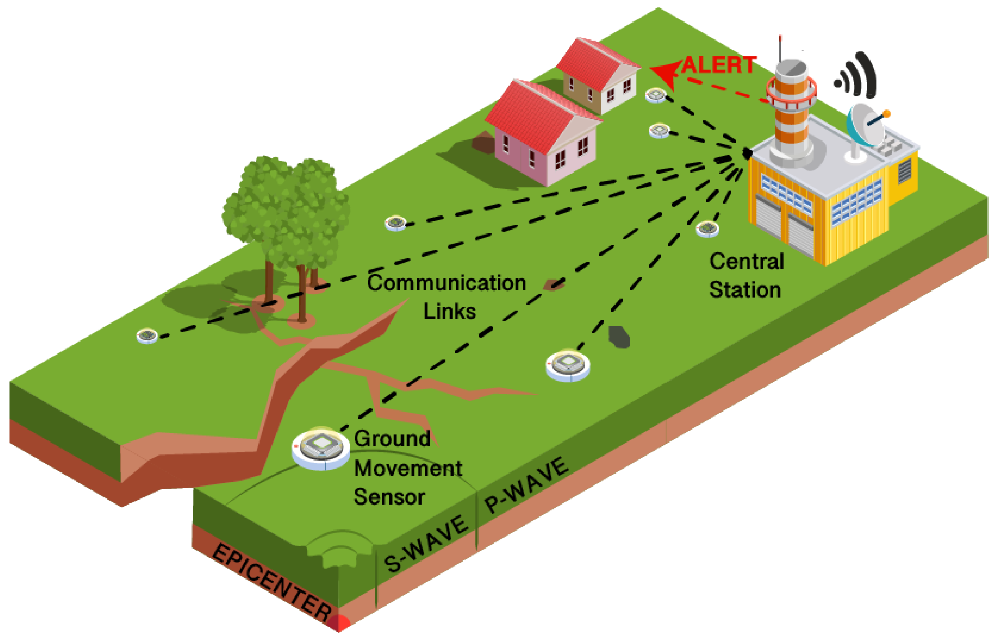
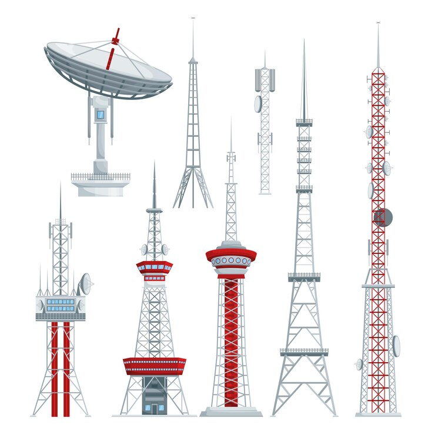

HOMEPAGE
ABOUT US
MATH
DISASTER RISK PLAN
DOCUMENTARY
HOMEPAGE
ABOUT US
MATH
DISASTER RISK PLAN
DOCUMENTARY


What is CBDRRM?
The Comprehensive Barangay Disaster Risk Reduction and Management (CBDRRM) is a systematic approach to reducing vulnerabilities and risks in the barangay. It integrates disaster risk reduction into development planning and promotes resilience at the community level.
Key Components:
Before Disaster Strikes:
Evacuation Routes:
Primary Route: Barangay Hall → Main Road → Municipal Gymnasium
Secondary Route: Purok Centers → School Grounds → Multipurpose Hall
Tertiary Route: Community Centers → Barangay Evacuation Centers
Key Evacuation Centers:
[Map image placeholder - Insert barangay evacuation map here]
| Agency | Contact Number |
|---|---|
| National Emergency Hotline | 911 |
| Natonin Municipal Police Office | (074) 390-0022 |
| Natonin Fire Station | (074) 390-0025 |
| Natonin Health Center | (074) 390-0040 |
| Natonin Disaster Risk Reduction Management Office | (074) 390-0017 |
| Natonin Municipal Hall | (074) 390-0001 |
| Mountain Province Provincial Disaster Management Office | (074) 607-0600 |
Family Emergency Kit Should Include:
Community Preparedness Tasks:
Visual Guide to Disaster Preparedness:

An infographic illustrating key steps in disaster preparedness, warning signs, and community response procedures.
Role of Electromagnetic Waves in Emergency Systems:
Electromagnetic waves are essential for disaster warning systems, including radio signals, cell phone networks, and emergency broadcast systems that alert communities to incoming threats.
Key Communication Channels:
Disaster Communication Photos:

Emergency Alert Signal
Visual alert systems for emergency broadcasting

Telecommunications Infrastructure
Communication towers and signal infrastructure for emergency systems
Learning from Real Scenarios:
Watch this demonstration video about earthquake preparedness and response. Learn critical safety procedures that could save your life during an earthquake.
Earthquake safety demonstration - covering what to do before, during, and after an earthquake hits
BEFORE AN EARTHQUAKE:
DURING AN EARTHQUAKE:
AFTER AN EARTHQUAKE: